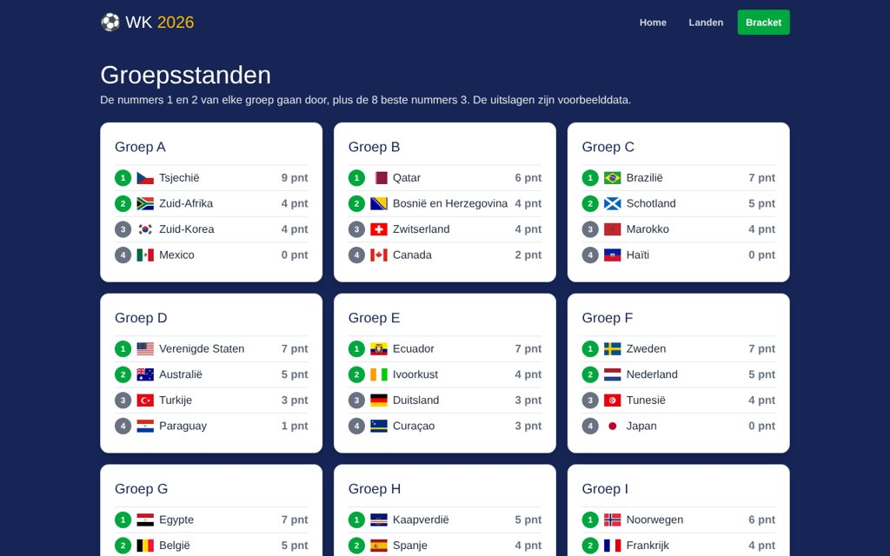

VOLTOOID ✓
Missie 1
WK 2026
★★★
Een website over het WK 2026 met alle 48 landen. Zoeken, filteren per groep en per land de wedstrijden bekijken. De groepsstanden rekent de site zelf uit op basis van de uitslagen in de database.
- Database ontworpen met landen, groepen en wedstrijden
- Code opgesplitst in PHP-bestanden en aparte views
- Puntentelling geprogrammeerd voor de groepsstanden
- Zelf online gezet op een Plesk-server
BELONING
PHPSQLITETAILWINDPLESK